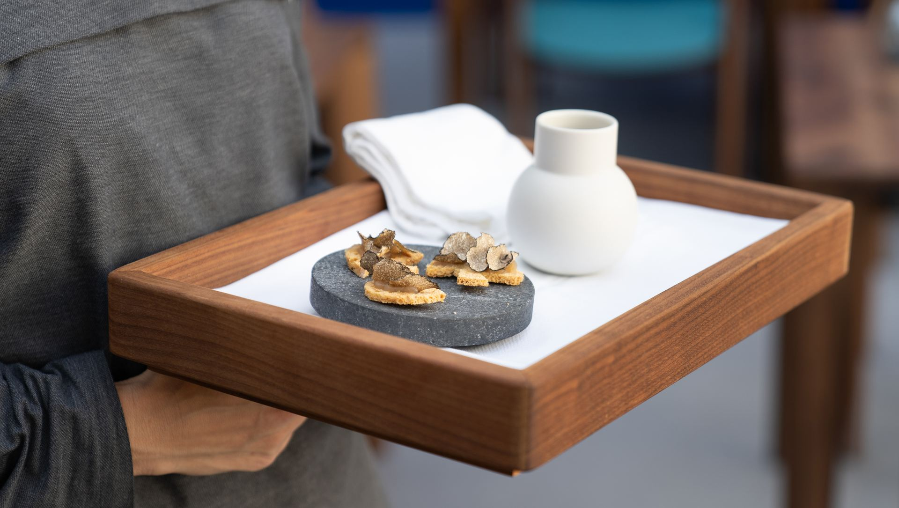

Predstava za iskusne
i znatiželjne
Nekoliko koraka od središnjeg trga glavnog grada Hrvatske, u atriju Zagrebačkog kazališta mladih, Filip Horvat nudi inovativno gastronomsko iskustvo u modernom ali dramatičnom kazališnom interijeru.
RezervacijaScenario
Sve omiljene tradicionalne standarde hrvatske kuhinje chef Filip Horvat preciznošću kirurga rastvara i ponovo sklapa na posve neočekivane i uzbudljive načine. Svaki obrok prava je predstava puna karaktera.
Iz našeg Repertoara publika za ručak izabire jela iz Predstave, od Prologa do Epiloga. Za večeru dodajemo chef Filipov autorski Weekend Festival u šest i Sezonski festival u devet sljedova za potpuni doživljaj i užitak.
Ensemble
U svoju kuharsku postavu enfant terrible Filip Horvat uključio je sous chefove s iskustvom europskih restorana s Michelinovim zvjezdicama. S iznimnom pažnjom pripremaju doista svježe i organske namirnice koje svakog jutra nabavljaju na obližnjoj impresivnoj glavnoj gradskoj tržnici Dolac.
Voće i povrće prodavačice su uzgojile u svojim vrtovima i to jutro ubrale, selektira se meso od provjerenih malih uzgajivača i friška riba od domaćih ribara ulovljena u Jadranskom moru prethodne noći, a najbolje svjetsko maslinovo ulje i tartufi dolaze iz obližnje Istre. Samo je kavijar iz Rusije i Irana.
Repertoire
Očekuje vas niz iznenađenja i neočekivanih obrata kao u svakom vrhunskom dramskom djelu. Vrijeme je za predstavu.
